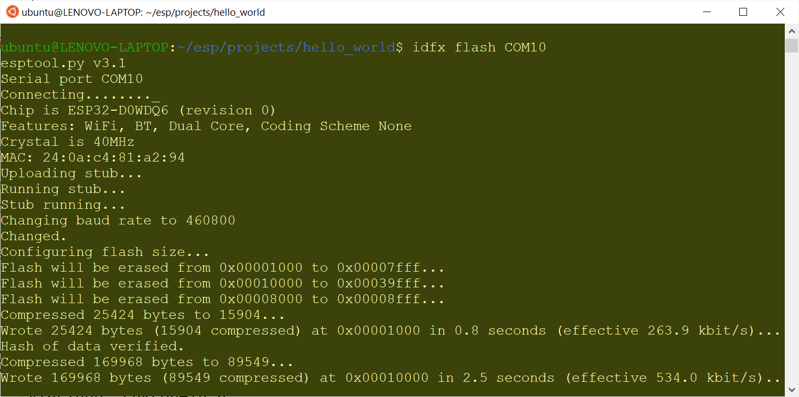
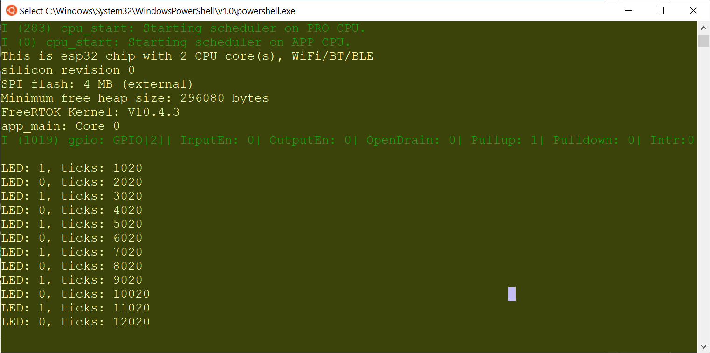

การติดตั้งและใช้งาน ESP-IDF สำหรับ WSL / Ubuntu#
▷ ESP-IDF สำหรับการเขียนโค้ด ESP32 ด้วยภาษา C/C++#
ขั้นตอนการติดตั้ง ESP-IDF ของบริษัท Espressif สำหรับ WSL - Ubuntu มีดังนี้
รูป: ESP-IDF ซอฟต์แวร์สำหรับการเขียนโปรแกรม C/C++ เพื่อใช้งานกับ ESP32 SoCs (Source: Espressif)
รูป: ตารางแสดงความสัมพันธ์ระหว่าง ESP-IDF Versions และการใช้งานร่วมกับชิปของ Espressif รุ่นต่าง ๆ
1) เริ่มต้นด้วยการเปิดใช้งาน Linux Terminal ของ WSL - Ubuntu แล้วทำคำสั่งต่อไปนี้ เพื่อติดตั้งซอฟต์แวร์ ซึ่งมีหลายแพ็คเกจที่จำเป็นสำหรับการทำงานของ ESP-IDF
# install software packages required before using the ESP-IDF
$ sudo apt install git wget flex bison gperf \
python3 python3-pip python3-setuptools python3-venv \
cmake ninja-build ccache \
libffi-dev libssl-dev dfu-util libusb-1.0-0
รูป: ตัวอย่างการทำคำสั่งเพื่อติดตั้งซอฟต์แวร์ใน Ubuntu
ตรวจสอบเวอร์ชันของ Python 3 (ในตัวอย่างนี้ จะเห็นได้ว่าเป็น Python 3.8.10)
# check the version of Python3
$ python3 --version
Python 3.8.10
2) สร้างไดเรกทอรีใหม่สำหรับการติดตั้ง ESP-IDF ที่มีชื่อว่า ~/esp อยู่ในไดเรกทอรีของผู้ใช้
จากนั้นดาวน์โหลดไฟล์ของ ESP-IDF มาจาก Github เก็บไว้ใน ~/esp/esp-idf
# create a new directory named 'esp' under the user's home directory
$ mkdir -p ~/esp && cd ~/esp
# clone the esp-idf (latest version is 5.0) repo from github
$ git clone --recursive git://github.com/espressif/esp-idf
# change directory to '~/esp/esp-idf'
$ cd ~/esp/esp-idf
# update submodules (optional)
$ git submodule update --init --recursive
รูป: ตัวอย่างการทำคำสั่งเพื่อดาวน์โหลด ESP-IDF มาจาก Github
3) ถัดไปจะต้องดาวน์โหลดและติดตั้งไฟล์ที่เป็นโปรแกรมสำหรับการคอมไพล์โค้ด (เช่น โปรแกรมที่ทำหน้าที่เป็น C/C++ Toolchains) ซึ่งแตกต่างกันไปตามชิปที่ใช้ เช่น ESP32, ESP32-S2, ESP32-S3 และ ESP32-C3
# Install tools for all supported targets:
# all = (esp32 esp32s2 esp32c3, esp32s3)
$ export IDF_GITHUB_ASSETS="dl.espressif.com/github_assets"
$ ./install.sh all
รูป: ตัวอย่างการทำคำสั่ง ./install.sh all
รายการไฟล์ที่จะต้องมีการดาวน์โหลดเพื่อใช้เป็นเครื่องมือสำหรับ ESP-IDF (ติดตั้งไว้ใน ~/.espressif/tools) มีตัวอย่างดังนี้
xtensa-esp32-elf-gcc8_4_0-esp-2021r2-patch3-linux-amd64.tar.gzxtensa-esp32s2-elf-gcc8_4_0-esp-2021r2-patch3-linux-amd64.tar.gzxtensa-esp32s3-elf-gcc8_4_0-esp-2021r2-patch3-linux-amd64.tar.gzriscv32-esp-elf-gcc8_4_0-esp-2021r2-patch3-linux-amd64.tar.gzbinutils-esp32ulp-linux-amd64-2.28.51-esp-20191205.tar.gzbinutils-esp32s2ulp-linux-amd64-2.28.51-esp-20191205.tar.gzopenocd-esp32-linux-amd64-0.11.0-esp32-20211220.tar.gz
ทุกครั้งที่จะใช้งาน ESP-IDF (เช่น การทำคำสั่ง idf.py) จะต้องมีการทำคำสั่งต่อไปนี้ก่อน เพื่อให้สามารถเรียกใช้คำสั่งต่าง ๆ ของ ESP-IDF Tools ได้
# Set up the environment variables for ESP-IDF tools
$ . $HOME/esp/esp-idf/export.sh
ลองทำคำสั่ง idf.py เพื่อตรวจสอบเวอร์ชัน
$ idf.py --version
ESP-IDF v5.0-dev-1662-g2ac0942dfb
รูป: ตัวอย่างการทำคำสั่ง . $HOME/esp/esp-idf/export.sh
ในกรณีที่ต้องการติดตั้งและใช้งาน ESP-IDF มากกว่าหนึ่งเวอร์ชัน
ให้ตั้งชื่อไดเรกทรอรีย่อยตามเวอร์ชันที่ใช้งาน เช่น ใช้เวอร์ชัน v4.4.1 นอกเหนือจาก v5.0 (เป็น master branch ในตัวอย่างนี้) ดังนั้นภายในไดเรกทอรี ~/esp จะมีไดเรกทอรีดังนี้
~/esp/esp-idf-v5.0
~/esp/esp-idf-v4.4.1
แล้วสร้าง Soft link (เหมือนการใช้ Shortcut) โดยใช้ชื่อ esp-idf เพื่อระบุว่า
จะเลือกใช้เวอร์ชันใด เช่น
$ ln -s ./esp-idf-v4.4.1 esp-idf
ลองทำขั้นตอนติดตั้ง ESP-IDF v4.4.1 เพิ่มแล้วตั้งค่าเพื่อเรียกใช้งาน
# change the current working directory to ~/esp
$ cd ~/esp
# clone the ESP-IDF v4.4.1 (not the master branch)
$ git clone -b v4.4.1 --recursive https://github.com/espressif/esp-idf.git
# rename the 'esp-idf' subdirectory to 'esp-idf-v4.4.1'
$ mv ./esp-idf ./esp-idf-v4.4.1
# create a soft link named 'esp-idf'
$ ln -s ./esp-idf-v4.4.1 esp-idf
# install Espressif tools and other software (Python3 packages)
$ export IDF_GITHUB_ASSETS="dl.espressif.com/github_assets"
$ cd ~/esp/esp-idf
$ ./install.sh all
ลองใช้คำสั่ง idf.py ซึ่งเป็นของเวอร์ชัน ESP-IDF v4.4.1
# export the ESP-IDF path for 'idf.py'
$ . $HOME/esp/esp-idf/export.sh
# show the ESP-IDF version (=> ESP-IDF v4.4.1)
$ idf.py --version
▷ การสร้างโปรเจกต์จากตัวอย่างสำหรับ ESP32#
ถัดไปเป็นการทดลองคอมไพล์โปรเจกต์ตัวอย่างที่มีชื่อว่า hello_world ซึ่งมีอยู่ใน ~/esp/esp-idf/examples
# make a new directory '~/esp/projects'
$ mkdir -p ~/esp/projects && cd ~/esp/projects
# copy the hello_world project example to '~/esp/projects'
$ cp -r $IDF_PATH/examples/get-started/hello_world .
# change working directory to './hello_world'
$ cd ./hello_world
แสดงรายการตัวเลือกสำหรับชิปเป้าหมาย และให้เลือกชิปเป้าหมายเป็น ESP32 สำหรับตัวอย่างนี้
# list all avaialble targets
$ idf.py --list-targets
# set the target such as esp32 | esp32s2 | esp32s3 | esp32c3
# choose esp32 as the build target
$ idf.py set-target esp32
รูป: ตัวอย่างการทำคำสั่ง idf.py --list-targets และ idf.py set-target esp32
ก่อนทำขั้นตอน Build Target และหากต้องการแก้ไขการตั้งค่าสำหรับโปรเจกต์ (Project configuration / customization) เช่น
- การกำหนดขนาดของ Flash Size และการแบ่ง Flash Partitions
- การกำหนดความถี่ของซีพียูในการทำงาน (Component config -> ESP32-specific -> CPU Frequency)
- การกำหนดค่า FreeRTOS Tick Rate (Component config -> ESP32-specific -> FreeRTOS)
ก็ให้ทำคำสั่งต่อไปนี้ โดยจะเข้าสู่เมนูแบบกราฟิกที่เรียกว่า menuconfig
# start menuconfig
$ idf.py menuconfig
เมื่อมีการแก้ไขแล้วให้บันทึกการเปลี่ยนแปลง ซึ่งจะถูกเก็บลงในไฟล์ ./sdkconfig ในไดเรกทอรีของโปรเจกต์

รูป: รายการตัวเลือกใน menuconfig

รูป: ตัวอย่างการตั้งค่าความถี่สำหรับซีพียู (CPU Frequency) สูงสุด 240 MHz สำหรับ ESP32
รูป: ตัวอย่างการทำคำสั่ง idf.py menuconfig และ idf.py build
# build the target
$ idf.py build
ตัวอย่างการทำคำสั่ง tree เพื่อแสดงรายการไฟล์ภายในไดเรกทอรีของโปรเจกต์
$ tree -L 2
.
├── CMakeLists.txt
├── README.md
├── build
│ ├── CMakeCache.txt
│ ├── CMakeFiles
│ ├── app-flash_args
│ ├── bootloader
│ ├── bootloader-flash_args
│ ├── bootloader-prefix
│ ├── build.ninja
│ ├── cmake_install.cmake
│ ├── compile_commands.json
│ ├── config
│ ├── config.env
│ ├── esp-idf
│ ├── flash_app_args
│ ├── flash_args
│ ├── flash_args.in
│ ├── flash_bootloader_args
│ ├── flash_project_args
│ ├── flasher_args.json
│ ├── hello_world.bin
│ ├── hello_world.elf
│ ├── hello_world.map
│ ├── kconfigs.in
│ ├── kconfigs_projbuild.in
│ ├── ldgen_libraries
│ ├── ldgen_libraries.in
│ ├── partition-table-flash_args
│ ├── partition_table
│ ├── project_description.json
│ ├── project_elf_src_esp32.c
│ ├── rules.ninja
│ └── x509_crt_bundle.S
├── example_test.py
├── main
│ ├── CMakeLists.txt
│ └── hello_world_main.c
├── sdkconfig
├── sdkconfig.ci
└── sdkconfig.old
8 directories, 33 files
หากใช้ระบบปฏิบัติการ Linux เช่น Ubuntu ตามปรกติ (ไม่ได้ใช้ผ่าน WSL ใน Windows)
ให้ทำคำสั่งต่อไปนี้ เพื่อทำขั้นตอน ESP32 Flashing (เขียนไฟล์ .bin ไปยังหน่วยความจำแฟลชบนบอร์ด ESP32)
และจะต้องระบุพอร์ตที่เชื่อมต่อกับบอร์ด ESP32 เช่น /dev/ttyUSB0
$ idf.py -p /dev/ttyUSB0 flash
หากมีปัญหาในการเขียนข้อมูลไปยังพอร์ตดังกล่าว ให้ทำคำสั่งดังนี้
## add the current user account to the 'dialout' group
$ sudo usermod -a -G dialout "$USER"
# show all groups the current user belongs to
$ id -Gn | grep dialout
แต่ถ้าใช้งาน WSL2 Ubuntu จะมองไม่เห็นพอร์ตอย่างเช่น /dev/ttyUSB0
เหมือนใน Linux ทั่วไป
และให้ติดตั้ง idfx
โดยเก็บไว้ที่ $HOME/.local/bin ดังนี้
# create a new path (if not exists)
$ mkdir -p $HOME/.local/bin
# install idfx - a tool for flashing ESP32 if using ESP-IDF on WSL
$ wget https://raw.githubusercontent.com/abobija/idfx/main/idfx \
-O $HOME/.local/bin/idfx && chmod u+x $HOME/.local/bin/idfx
$ source ~/.profile
ถ้าต้องการจะทำขั้นตอน ESP32 Flashing โดยใช้คำสั่ง idfx
ให้เชื่อมต่อบอร์ด ESP32 กับคอมพิวเตอร์ของผู้ใช้ผ่านทาง USB
และจะต้องระบุชื่อของพอร์ตอนุกรมที่มองเห็นได้ในระบบ Windows
$ idfx flash <COM port>

รูป: ตัวอย่างการทำคำสั่ง idfx flash COM10
หากต้องการจะรับข้อความจากพอร์ตอนุกรมมจากบอร์ด ESP32 ให้ทำคำสั่ง idfx ตามตัวอย่างดังนี้
# start the serial monitor (press Ctrl-] to stop the monitor)
$ idfx monitor <COM port>
ข้อสังเกต:
- เนื่องจาก ESP-IDF ตั้งแต่เวอร์ชัน 4.0 เป็นต้นมา ได้เลือกใช้ CMake เป็นตัวจัดการสำหรับขั้นตอนการคอมไพล์โค้ดในโปรเจกต์ ดังนั้นก็สามารถนำไปใช้กับ VS Code IDE ซึ่งจะต้องมีการติดตั้ง Extensions เช่น C/C++ Extension และ CMake Tools Extension เป็นต้น ซึ่งจะช่วยให้ผู้ใช้สามารถเขียนโค้ดและคอมไพล์โค้ดในโปรเจกต์ได้ยิ่งง่ายขึ้น
- จากรูปตัวอย่างการใช้งาน VS Code IDE จะเห็นได้ว่า เป็นการใช้งานแบบ Remote Connection กล่าวคือ VS Code IDE ทำให้งานเป็น Windows App แต่เชื่อมต่อไปยัง VS Code Server ที่รันอยู่ภายใต้ WSL2 / Ubuntu Linux ในเครื่องคอมพิวเตอร์เดียวกันของผู้ใช้
รูป: ตัวอย่างการเปิดไดเรกทอรีของโปรเจกต์เพื่อเขียนโค้ดใน VS Code IDE
▷ ลองสร้างโปรเจกต์ใหม่: LED Blink#
ให้ทำขั้นตอนตามลำดับดังนี้
1) สร้างโปรเจกต์ใหม่ที่มีชื่อว่า led_blink
$ cd ~/esp/projects/
$ idf.py create-project "led_blink"
$ cd ./led_blink
เมื่อสร้างโปรเจกต์แล้ว ในไดเรกทอรี led_blink มีโครงสร้างไฟล์ใหม่ดังนี้
$ tree -L 2
.
├── CMakeLists.txt
└── main
├── CMakeLists.txt
└── led_blink.c
1 directory, 3 files
2) แก้ไขโค้ดในไฟล์ main/led_blink.c ตามตัวอย่างดังนี้
#include <stdio.h>
#include "sdkconfig.h"
#include "freertos/FreeRTOS.h"
#include "freertos/task.h"
#include "driver/gpio.h"
#include "esp_system.h"
#include "esp_chip_info.h"
#include "esp_spi_flash.h"
#define LED_GPIO (2) // onboard LED
void task_entry( void* pvParameters ) {
int state = 0;
gpio_reset_pin( LED_GPIO ); // reset pin to GPIO function
gpio_set_direction( LED_GPIO, GPIO_MODE_OUTPUT ); // output direction
for (;;) {
gpio_set_level( LED_GPIO, state = !state );
printf( "LED: %d, ticks: %d\n", state, xTaskGetTickCount() );
fflush( stdout );
vTaskDelay( 1000 / portTICK_PERIOD_MS );
}
}
void app_main(void) {
esp_chip_info_t chip_info;
esp_chip_info( &chip_info );
printf( "This is %s chip with %d CPU core(s), WiFi%s%s\n",
CONFIG_IDF_TARGET, chip_info.cores,
(chip_info.features & CHIP_FEATURE_BT) ? "/BT" : "",
(chip_info.features & CHIP_FEATURE_BLE) ? "/BLE" : "" );
printf( "silicon revision %d\n", chip_info.revision );
printf( "SPI flash: %d MB (%s)\n",
spi_flash_get_chip_size() /(1024*1024),
(chip_info.features & CHIP_FEATURE_EMB_FLASH)
? "embedded" : "external");
printf( "Minimum free heap size: %d bytes\n",
esp_get_minimum_free_heap_size() );
printf( "FreeRTOS Kernel: %s\n", tskKERNEL_VERSION_NUMBER );
vTaskDelay( 1000 / portTICK_PERIOD_MS );
// create a new task
if ( xTaskCreatePinnedToCore( task_entry,
"led_task", 2048, NULL, 1,
NULL, tskNO_AFFINITY ) != pdPASS )
{
printf("Cannot create a task!\n");
}
printf( "app_main: Core %d\n", xPortGetCoreID() );
fflush(stdout);
}
3) ทำคำสั่งเพื่อเลือกชิปเป้าหมาย กำหนดค่าสำหรับโปรเจกต์ในไฟล์ sdkconfig และทำขั้นตอน Build target
$ idf.py set-target esp32
$ idf.py menuconfig
$ idf.py build
4) นำไฟล์เอาต์พุตที่ได้ไปทดสอบกับบอร์ด ESP32

รูป: ตัวอย่างข้อความเอาต์พุตที่ถูกส่งออกมาจากบอร์ด ESP ทาง Serial
หากต้องการแก้ไขโค้ดใน VS Code IDE ก็ทำได้เช่นกัน
รูป: การเปิดโปรเจกต์ใน VS Code IDE (ทำคำสั่ง code . ในไดเรกทอรีของโปรเจกต์ led_blink)
เพื่อลองแก้ไขโค้ดและทำขั้นตอน Build Target
▷ แหล่งข้อมูลอ้างอิงและศึกษาเพิ่มเติม#
- ESP-IDF Programming Guide - Get Started
- ESP-IDF Programming Guide - API Reference
- ESP-IDF API Guides
- CMake Tools for Visual Studio Code documentation
- Get started with CMake Tools on Linux
▷ กล่าวสรุป#
บทความนี้นำเสนอขั้นตอนการติดตั้งและใช้งาน ESP-IDF v5.0 เพื่อใช้งานร่วมกับระบบปฏิบัติการ Ubuntu 20.04 LTS โดยใช้งานผ่าน WSL 2 (Windows Subsystem for Linux version 2) ในเครื่องคอมพิวเตอร์ที่มีระบบปฏิบัติการ Windows 10 (64-bit) และได้ทดลองสร้างโปรเจกต์ที่มีตัวอย่างโค้ดภาษา C/C++ สำหรับนำไปทดสอบการทำงานของบอร์ด ESP32 ในเบื้องต้น
This work is licensed under a Creative Commons Attribution-ShareAlike 4.0 International License.
Created: 2022-02-23 | Last Updated: 2022-07-16